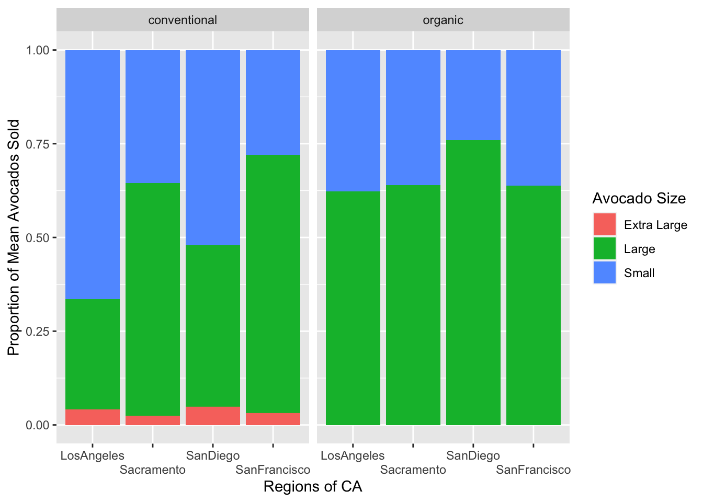

Code
library(tidyverse)
library(here)Challenge 3 Letter B (WD-2, DVS-5, R-3)
Lab 4 Question 7 (DVS-1, DVS-2, DVS-4)
Now that we've passed the halfway point for the class, I feel that I've become exponentially more prepared to work in a data scientist or analyst position post-college. Therefore, I feel like my goals are being accomplished. I feel more prepared primarily because of our recent use of complicated data visualizations and summarization throughout these last few weeks. For example, I feel that I've gained proficiency in all the Data Visualization & Summarization learning targets except for DVS-3. In Challenge 3, I was able to show my ability to summarize variables across multiple groups when finding the highest difference in music genre familiarity across white and non-white groups, which satisfies DVS-5. In Lab 4 Question 7, I was able to successfully replicate the graph showing the proportion of avocados by size sold in each California region. This graph required a visualization of factor, numerical, and categorical variables to provide enough visual information. Secondly, the x-axis labels were difficult to read, which required the use of a dodge to stagger the labels. Lastly, the proportion of avocados sold by size had to be calculated using mutate, mean, and simple division. After completing the question and submitting revisions, I was able to show proficiency in DVS-1, DVS-2, and DVS-4. In my Week 3 Reflection, I wasn't familiar with the Working with Data learning target WD-5, and the Reproducibility learning target R-3. I feel confident in my proficiency for WD-5, which I practiced heavily throughout Week 4 with the use of semi join and anti-join. I even showed use of it in Lab 4 Question 7. As for R-3, the summarize and select functions used in Challenge 3 Letter B show programs that are resistant to change in inputs due to the use of column names rather than indexing by numerical position. I had a problem with indexing by numerical position when writing my Week 3 Reflection, so I'm happy I'm able to show proficiency in that learning target now.
I've demonstrated a commitment to continued learning by completing every Challenge problem and making corrections to each Challenge I've received feedback for. Throughout my solving of these problems, I used stack overflow frequently, which has helped my Program Efficiency. My proficiency in learning target PE-4 has drastically increased because I'm able to see the most efficient ways other people have been able to utilize different functions in the tidy verse. I've grown as a team member and a leader as the labs have gotten continually harder because our group has had to communicate more than in Weeks 1-3 to be able to complete the labs and challenge assignments. I've started to utilize discord more and have even posted a few questions which I believe other students benefitted from as well. By doing so, I feel I'm helping turn discord into the helpful tool it was intended to be at the start of this quarter. Unfortunately, I haven't been good about answering other people's discord questions so far, which is something I need to start actively doing. I can't expect an answer for every question I have if I'm not helping provide other students with answers as well.
I believe my current grade is an A-. I've submitted full attempts/solutions for every assignment, completed almost all assignments on time, and have demonstrated proficiency in the vast majority of learning targets. I've revised my code for every lab or challenge I've received feedback on and have shown an increase in quality of assignments as I continue to make revisions. I've been a helpful group member in and out of class, and I ask questions when needed in class or on discord but have been subpar about answering other student's questions on discord. Lastly, I believe I've given peer reviews that give constructive criticism and enable my peers to make positive changes to their code. But I also believe I could've given better feedback in my earlier peer reviews now that I'm not as naïve to R.
library(tidyverse)
library(here)hiphop <- read_csv(here("Week 3", "Lab 3", "hiphop.csv"))
new_hiphop <- hiphop |>
mutate(
white_or_nonwhite =
if_else(ethnic != "white", "non-white", "white"),
white_or_nonwhite =
as.factor(white_or_nonwhite)
)
new_hiphop |>
select(intl, vocal, classical,
folk, rock, country,
pop, alternative, hiphop,
unclassifiable, white_or_nonwhite) |>
group_by(white_or_nonwhite) |>
summarise(across(intl:unclassifiable, mean)) |>
summarise(across(intl:unclassifiable, diff))# A tibble: 1 × 10
intl vocal classical folk rock country pop alternative hiphop
<dbl> <dbl> <dbl> <dbl> <dbl> <dbl> <dbl> <dbl> <dbl>
1 -1.59 0.526 -0.0485 0.270 1.51 0.490 -0.0431 1.19 -0.730
# … with 1 more variable: unclassifiable <dbl>avocados <- read_csv(here("Week 4", "Lab 4", "avocado.csv"))
california_regions <- tibble(CaliforniaRegions = c(
"SanFrancisco", "SanDiego", "LosAngeles","Sacramento")
)
avocados <- avocados |>
rename("Small" = "4046",
"Large" = "4225",
"Extra Large" = "4770")
avocados_longer <- avocados |>
semi_join(california_regions, by = c("region" = "CaliforniaRegions")) |>
pivot_longer("Small":"Extra Large",
names_to = "Avocado Size",
values_to = "Number Avocados") |>
mutate(Proportion = `Number Avocados` / mean(`Total Volume`))
avocados_longer |>
ggplot(mapping = aes(x = region, y = Proportion, fill = `Avocado Size`)) +
geom_bar(position = position_fill(reverse = TRUE), stat = "identity") +
labs(x = "Regions of CA", y = "Proportion of Mean Avocados Sold") +
#Found function below on Stack Overflow
scale_x_discrete(guide = guide_axis(n.dodge=2)) +
facet_wrap(~ type)